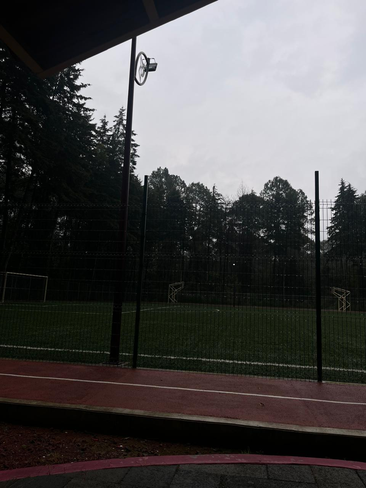

<!DOCTYPE html>
<html lang="es">
<html>
   
        <head>
    <TITLE>WEBSITE CECYMAGIC Alex_rz</TITLE>
    <link rel="icon" href="Logowebsite.jpeg" type="image/jpeg">
  </head>
</html>

<head>
    <meta charset="UTF-8">
    <meta name="viewport" content="width=device-width, initial-scale=1.0">
    <title>WEBSITE CECyMagic </title>
    <link href="https://cdn.jsdelivr.net/npm/bootstrap@5.3.3/dist/css/bootstrap.min.css" rel="stylesheet">

    <style>
    .card-img-top{
        height: 700px;
        object-fit: cover;
    }
     .card{
        height: 100%;
     }

   h1{
      color: rgb(99, 45, 25);
      font-family:cursive;
   }

    p{
      color: rgb(117, 9, 9);
      text-align:justify;
      font-family: Cambria, Cochin, Georgia, Times, 'Times New Roman', serif;
   }
   

    </style> 
</head>
 
<body>
        <div class="container text-center my-5">
        <h1>CUADRILLA DE DOLORES</h1>
        <h4 style="color: rgba(21, 87, 18, 0.641);">¡
           Valle de Bravo !</h4>
        </div>

        <div class="container my-5">
        <div class="row g-4">

        <div class="col-md-12">
        <div class="card h-100 shadow">
          
          
           
        <div class="card-body text-center">
            <h5 class="card-title">
            UNIDAD DEPORTIVA </h5>
            <p class="card-text">
            Construcción e inauguración:
            La construcción del Deportivo de la Cuadrilla de Dolores inició en 2024, gracias a la donación de un terreno por parte de la comunidad y al impulso del gobierno municipal encabezado por Michelle Núñez Ponce. El proyecto contempló instalaciones como cancha de fútbol con pasto sintético, gimnasio al aire libre, área infantil, trotapista, vestidores y sanitarios. En 2025, la obra alcanzó un 90% de avance y finalmente fue entregada en 2026, consolidándose como uno de los complejos deportivos más importantes de Valle de Bravo. </p>
           <p class="card-text">
              Impacto social y comunitario:
              El deportivo no solo está destinado a la práctica de deportes, sino también a fomentar la convivencia familiar y comunitaria. Las autoridades locales destacaron que este espacio contribuye a fortalecer el tejido social, reducir factores de riesgo entre la niñez y juventud, y promover valores como disciplina, constancia y trabajo en equipo. Además, se busca que sea un lugar accesible para todas las edades, con áreas recreativas y de entrenamiento que mejoren la calidad de vida de los habitantes.</p>
            <p class="card-text">
              Compromiso gubernamental:
              La inauguración del Deportivo de la Cuadrilla de Dolores refleja la estrategia del gobierno municipal de Valle de Bravo de invertir en infraestructura deportiva como herramienta de desarrollo integral. La administración de Núñez Ponce ha sido reconocida por ser la que más espacios deportivos ha construido y rehabilitado en la historia reciente del municipio. Este proyecto se suma a una política pública orientada a crear comunidades más saludables, seguras y cohesionadas, asegurando beneficios duraderos para las generaciones actuales y futuras. </p>
                
              
        </div>
        </div>
        </div>

        <div class="col-md-6">
        <div class="card h-100 shadow">
          
           
        <div class="card-body text-center">
            <h5 class="card-title">
            IGLESIA DE CUADRILLA DE DOLORES</h5>
            <p class="card-text">
           La Iglesia Nuestra Señora de los Dolores se ubica en Valle de Bravo, Estado de México, y se ha consolidado como un punto de referencia para los habitantes de la zona. Aunque no cuenta con una gran presencia digital ni registros históricos extensos, su relevancia es principalmente local. Es un lugar donde generaciones de familias han celebrado momentos clave como bautizos, primeras comuniones, matrimonios y funerales. La advocación mariana de Nuestra Señora de los Dolores le otorga un carácter especial, pues invita a la reflexión sobre el sufrimiento y la compasión, ofreciendo consuelo espiritual a quienes atraviesan dificultades.</p>
           <p class="card-text">
             En este templo se celebran misas dominicales, consideradas el pilar de la semana para la comunidad católica. También suelen realizarse misas en días específicos de la semana, aunque con menor frecuencia que en parroquias principales. Los horarios de misa y confesión no suelen publicarse en línea, sino que se comunican directamente en el templo o de boca en boca entre los feligreses. Además de su función religiosa, la iglesia cumple un papel social: es un espacio de convivencia donde los vecinos refuerzan sus lazos y mantienen vivas las tradiciones locales. </p>
          
             <h5 class="card-title">
            SECUNDARIA "HEROES DE LA INDEPENDENCIA" </h5>
            <p class="card-text">
             La escuela está registrada oficialmente como OFTV No. 0437 “Héroes de la Independencia” con la clave de centro de trabajo 15ETV0441T. Se ubica en la localidad de Cuadrilla de Dolores, Valle de Bravo, Estado de México, C.P. 51225, cerca de la calle Juan Cicilia. Atiende a un total de 152 alumnos (79 hombres y 73 mujeres) y cuenta con 6 docentes (2 hombres y 4 mujeres). Todas sus 6 aulas están en uso, lo que refleja una infraestructura activa y suficiente para la población escolar. El plantel funciona en turno matutino, lo que permite a los estudiantes aprovechar la mañana para sus estudios y tener la tarde libre para actividades familiares o comunitarias.
            </p>
            
            <p class="card-text">
              La secundaria ofrece el nivel de telesecundaria, un modelo que combina clases presenciales con apoyo audiovisual y materiales didácticos de la Secretaría de Educación Pública. Este sistema busca garantizar que comunidades rurales o semiurbanas tengan acceso a educación secundaria de calidad. Además de las materias básicas, fomenta valores de identidad nacional, disciplina y participación comunitaria. Para consultas o trámites, la escuela puede ser contactada al teléfono 7262514168 o al correo oftv0437@yahoo.com.mx. Su papel en la Cuadrilla de Dolores es fundamental, ya que brinda continuidad educativa a los jóvenes después de la primaria y los prepara para ingresar al bachillerato o formación técnica.
            </p>


        </div>
        </div>
        </div>

        <div class="col-md-6">
        <div class="card h-100 shadow">
          
           
        <div class="card-body text-center">
            <h5 class="card-title">
             VIDEO </h5>
            
          <video controls>
            <source src="Video1.mp4" type="video/mp4">
          </video>
        </div>
        </div>
        </div>

        </div>
        </div>
   <a href="index.html"> REGRESAR </a>

      </body>
</html>
    
